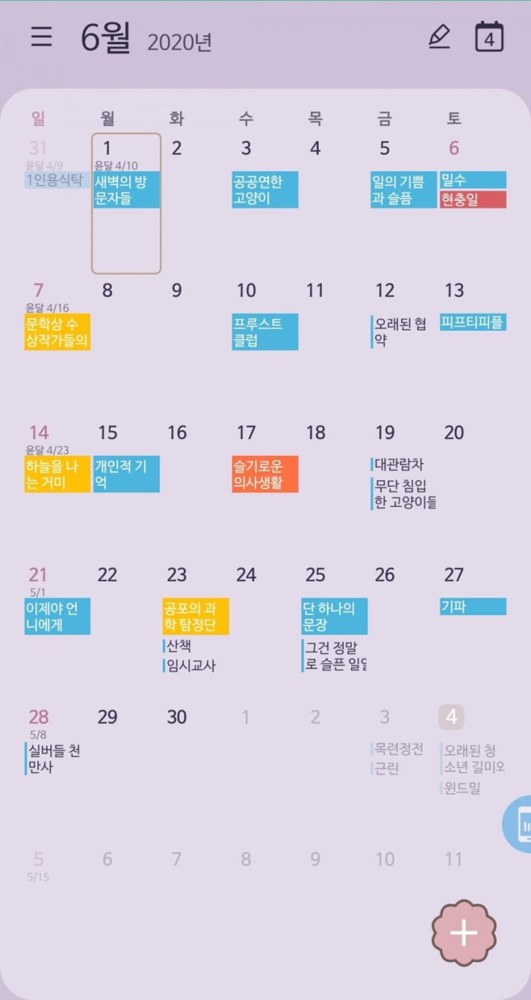

소설
새벽의 방문자들 ☆☆☆☆
공공연한 고양이 ☆☆☆☆
일의 기쁨과 슬픔 ☆☆☆☆|
밀수 ☆☆☆☆☆
프루스트 클럽 ☆☆☆☆
오래된 협약 ☆☆☆☆☆
피프티피플 ☆☆☆☆☆
개인적 기억 ☆☆☆☆|
대관람차 ☆☆☆☆|
무단 침입한 고양이들 ☆☆☆
이제야 언니에게 ☆☆☆☆☆
산책 ☆☆☆|
임시교사 ☆☆☆☆|
단 하나의 문장 ☆☆☆☆|
그건 정말로 슬픈 일일거야 ☆☆☆☆
기파 ☆☆☆☆
실버들 천만사 ☆☆☆☆|
동화
문학상 수상작가들의 단편동화 읽기 ☆☆☆
하늘을 나는 거미 ☆☆☆|
공포의 과학 탐정단 ☆☆☆☆